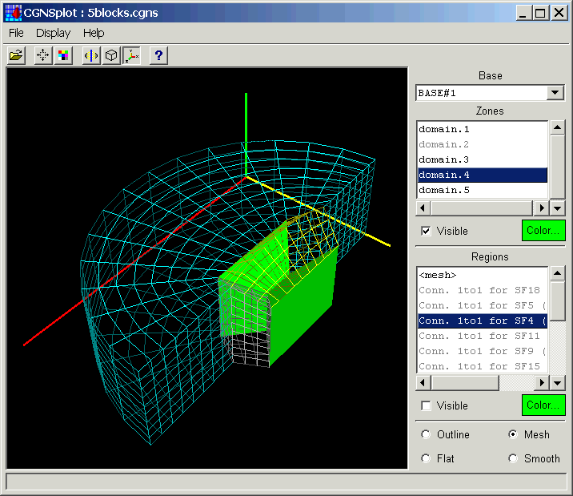

(CGNS Documentation Home Page)
(Steering Committee Charter)
(Overview and Entry-Level Document)
(A User's Guide to CGNS)
(Standard Interface Data Structures)
(SIDS-to-ADF File Mapping Manual)
(SIDS-to-HDF File Mapping Manual)
(Mid-Level Library)
(ADF User's Guide)
(CGNS Tools and Utilities)
(CGNS Documentation Home Page)
(Steering Committee Charter)
(Overview and Entry-Level Document)
(A User's Guide to CGNS)
(Standard Interface Data Structures)
(SIDS-to-ADF File Mapping Manual)
(SIDS-to-HDF File Mapping Manual)
(Mid-Level Library)
(ADF User's Guide)
(CGNS Tools and Utilities)
(ADFviewer)
(CGNSplot)
(Utilities)
CGNSplot
The CGNSplot program displays the mesh, element sets,
connectivities and boundary conditions defined in a CGNS file.
You may click on the image below to jump to a topic, or select
from the following links.
